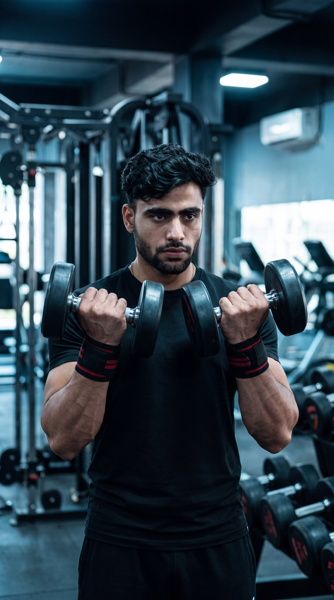

Primary Muscle
Deltoids
Build Complete Shoulder Development, Improve Mobility & Maximize Deltoid Activation
The Arnold Press is a compound shoulder exercise that primarily targets the anterior and lateral deltoids while also engaging the posterior deltoids, triceps, upper chest, trapezius, and core stabilizers. Its unique rotating movement increases the range of motion, promotes balanced shoulder development, improves shoulder mobility, and enhances overall overhead pressing strength.

Deltoids
Dumbbells
Intermediate
Compound
Discover which muscles are primarily responsible for the Arnold Press and which supporting muscles assist during the rotating overhead press, helping improve shoulder development, pressing strength, and overall upper-body stability.
Front and Side Shoulders
Rear Shoulders
Back of Upper Arm
Stabilizing Muscles
Discover how the Arnold Press helps build complete shoulder development, improve overhead strength, increase shoulder mobility, and maximize deltoid activation through its unique rotating pressing movement.
The rotating movement increases activation across the anterior, lateral, and posterior deltoids, helping build fuller, more balanced shoulder development.
Strengthens the muscles responsible for pressing weight overhead, improving athletic performance, functional strength, and other upper-body pressing exercises.
The rotational movement encourages a greater range of motion than a traditional shoulder press, helping improve shoulder mobility and movement quality.
Because each arm moves independently, the Arnold Press challenges the stabilizing muscles around the shoulder joint, improving balance and coordination.
This compound movement recruits the deltoids, triceps, upper chest, trapezius, and core muscles to build functional upper-body strength and coordination.
The Arnold Press combines a longer range of motion with progressive overload, making it an excellent exercise for building shoulder size, strength, and long-term upper-body development.
Follow these step-by-step instructions to perform the Arnold Press with proper rotation, controlled movement, and excellent shoulder stability for maximum muscle activation and balanced shoulder development.
Hold a dumbbell in each hand at shoulder level with your palms facing your body and your elbows positioned comfortably in front of your torso.
Begin with your wrists neutral and keep the dumbbells close to your shoulders.
Stand with your feet about shoulder-width apart, brace your core, maintain a neutral spine, and keep your chest lifted before beginning the press.
A stable core allows your shoulders to move efficiently without excessive lower-back arching.
As you press the dumbbells overhead, gradually rotate your palms outward until they face forward at the top of the movement. Perform the rotation smoothly while pressing upward.
Let the rotation happen naturally as you press. Avoid twisting your wrists aggressively.
Finish with your arms fully extended overhead and your palms facing forward. Keep your shoulders stable and your body upright without leaning backward.
Avoid shrugging your shoulders. Finish with the dumbbells directly above your shoulders.
Slowly lower the dumbbells to shoulder level while rotating your palms back toward your body. Return to the starting position under full control before beginning the next repetition.
Control both the lowering phase and the rotation. Smooth movement increases muscle activation and protects the shoulder joints.
Avoid these common technique mistakes to improve shoulder activation, perform the rotation correctly, and get the most out of every Arnold Press repetition.
Rotating the dumbbells too quickly or twisting the wrists aggressively reduces shoulder control and limits the effectiveness of the exercise.
Rotate your palms gradually as you press upward. The rotation should be smooth, controlled, and synchronized with the pressing movement.
Leaning backward during the press shifts tension away from the shoulders and places unnecessary stress on the lower back, especially when using heavy weights.
Brace your core, squeeze your glutes, and maintain a neutral spine throughout every repetition. Reduce the weight if necessary.
The Arnold Press has a longer range of motion than a traditional shoulder press. Using weights that are too heavy often causes poor rotation and incomplete repetitions.
Choose a weight that allows smooth rotation, full range of motion, and complete control throughout every repetition.
Letting the dumbbells fall rapidly during the lowering phase decreases muscle tension and makes it difficult to control the rotational movement.
Lower the dumbbells slowly while rotating your palms back toward your body in a smooth, controlled motion to maximize shoulder activation.
Apply these practical coaching cues to improve your Arnold Press technique, master the rotational movement, increase shoulder activation, and perform every repetition with greater control and stability.
The Arnold Press is defined by its controlled rotation. Rotate your palms gradually as you press upward instead of twisting your wrists abruptly.
The rotation and the press should happen together as one smooth, continuous movement.
A strong, braced core provides the stability needed to perform the rotational press while protecting your lower back from excessive arching.
Tighten your abs and glutes before every repetition and maintain that tension until the dumbbells return to the starting position.
Lift the dumbbells under control and lower them slowly while reversing the rotation. Controlled repetitions improve shoulder activation and movement quality.
Don't rush the lowering phase. Take about two to three seconds to return to the starting position.
Because the Arnold Press uses a longer range of motion and rotational movement, proper technique is more important than lifting the heaviest dumbbells.
Master smooth rotation and full range of motion before increasing the training load.
Progress from learning the unique rotational movement of the Arnold Press to building stronger, fuller shoulders, improving overhead control, and advancing to more challenging pressing variations while maintaining perfect technique.
Begin with light dumbbells and learn the correct rotational movement, pressing path, and body position before increasing the training load.
Smooth rotation, neutral spine, shoulder stability, controlled tempo, and full range of motion.
Perform controlled repetitions with moderate weights while maintaining smooth rotation, balanced arm movement, and stable shoulder positioning.
Controlled rotation, balanced pressing, stable shoulders, full range of motion, and consistent technique.
Gradually increase the dumbbell weight while preserving proper rotation, full shoulder range of motion, and complete control throughout every repetition.
Progressive overload, controlled movement, shoulder stability, full lockout, and maintaining perfect technique under heavier loads.
Once you have mastered the Arnold Press, progress to more advanced variations such as the Single-Arm Arnold Press, Standing Arnold Press, Push Press, or Barbell Shoulder Press to continue building strength and athletic performance.
Advanced shoulder development, improved stability, greater pressing strength, progressive overload, and selecting variations that match your training goals.
Find clear answers to common questions about the Arnold Press, including proper technique, muscles worked, shoulder rotation, training frequency, and progression.
The Arnold Press primarily targets the anterior and lateral deltoids while also recruiting the posterior deltoids, triceps, upper pectoralis major, trapezius, and core stabilizers. Its rotating movement increases overall shoulder muscle involvement.
The Arnold Press includes a controlled rotation of the wrists and shoulders as you press overhead. This longer range of motion increases shoulder activation and places greater emphasis on complete deltoid development compared with a traditional Dumbbell Shoulder Press.
Yes. The wrist rotation is a key part of the Arnold Press. Rotate your palms smoothly from facing your body at the bottom to facing forward at the top while keeping the movement controlled and comfortable.
Yes. Beginners can perform the Arnold Press safely by starting with light dumbbells, learning the rotational movement first, maintaining a neutral spine, and gradually increasing the weight as technique improves.
Most people can perform the Arnold Press one to two times per week as part of a balanced shoulder or upper-body workout while allowing enough recovery between training sessions.
The ideal number of sets and repetitions depends on your goals and experience. For general muscle growth and strength, performing 2–4 working sets of 6–12 controlled repetitions with smooth rotation and proper technique is a common and effective recommendation.
Explore other shoulder exercises that complement the Arnold Press and help you build stronger deltoids, improve overhead strength, enhance shoulder stability, and develop balanced upper-body performance.


Continue building stronger, more balanced shoulders with step-by-step exercise guides covering proper technique, muscles worked, common mistakes, expert coaching tips, and progressive training strategies.